Analysis
Here you will find extra information on analyses.
Hypothesis testing and Confidence Intervals
Comparison is the most common basic principle in medical research. A statement about the truth is compared against a reference statement (the null).
\(H_0\): Null hypothesis, e.g. cholesterol is comparable between men and women
\(H_1\): Alternative hypothesis, e.g. men and women differ on average in cholesterol
The p-value is the probability of obtaining the observed data in the sample (or some- thing more extreme than the observed data), given that the null hypothesis is true. The p-value is calculated based on a point estimate (e.g. mean) of the sample. The decision to reject a null hypothesis based on the p-value depends on a chosen \(\alpha\) level.
For a given dataset and corresponding test statistic, we say the results of the test are “statistically significant” if the p-value is less than the pre-selected and fixed significance level, \(\alpha\) (often 0.05).
Note that there is a distinction between statistical significance and clinical relevance:
If the sample size is large enough, even a small difference of 0.1 mmHg blood pressure can be statistically signifcant between groups, though it is not relevant from a clinical point of view.
If the sample size is too small, even a sample mean of 150 mmHg can be not statistically significantly different from 130 mmHg, though 20 mmHg is clinically relevant.
A confidence interval (CI) is another way to show the reliability of a point estimate. The decision to reject or not reject the null hypothesis aligns with whether or not the CI contains the null value (e.g. \(H_0\): mean = 0; if CI does not contain 0 then reject, otherwise do not reject \(H_0\)). In other words, the decision made by comparing the test statistic’s p-value to \(\alpha\) will be the same as a decision made using a \((1 - \alpha) * 100\%\) CI. An interpretation of e.g. a 95% CI is “if the testing procedure were repeated on many (k) samples, the confidence intervals would encompass the true population parameter in 95% of the k samples” or, more abstractly, “we are 95% confident that the true [e.g. mean] lies in the confidence interval”.
Comparing groups
t-Test
The t-test is a statistical procedure used to test for the difference in means between two independent populations. The samples should come from normal distributions (can check using e.g. qqnorm()) and the variances from each population are assumed to be equal.

The t-test in R makes a correction that does not require equal variances of the two populations. The null hypothesis is that the difference between means is 0; the alternative is that this difference is not 0.
Here is an example of how to do this test in R. In a data set on tooth growth, it appears that OJ recipients in the sample had a larger tooth growth than VC recipients, on average. We can test if this is true in the larger population using a t-test. Let’s set \(H_0\) to be that the two mean tooth lengths are the same and \(H_a\) will be that the two mean tooth lengths are not equal. Let’s use a 0.10 significance level, which means the probability we falsely reject the null is 0.10. Note that the function t.test also provides a confidence interval - the confidence level specified should be \(1 - \alpha\) for the interpretations to align.
data("ToothGrowth")
ttooth <- t.test(ToothGrowth$len~ToothGrowth$supp, conf.level = 0.90)
ttooth
Welch Two Sample t-test
data: ToothGrowth$len by ToothGrowth$supp
t = 1.9153, df = 55.309, p-value = 0.06063
alternative hypothesis: true difference in means between group OJ and group VC is not equal to 0
90 percent confidence interval:
0.4682687 6.9317313
sample estimates:
mean in group OJ mean in group VC
20.66333 16.96333 Here the p-value is less than our chosen significance level so we reject the null. Therefore, at the 10% significance level, the data provide sufficient evidence that our alternative hypothesis, that there is a difference between using OJ and VC to grow teeth, is true.
Now consider the following example. Suppose we believe the mean reaction velocity in an enzymatic reaction will be higher in cells treated with Puromycin compared to cells not treated with Puromycin. Let’s use the 0.05 significance level, allowing for a slightly smaller Type I error probability than in the previous example.
data("Puromycin")
t.test(rate ~ state, data = Puromycin, alternative = "greater")
Welch Two Sample t-test
data: rate by state
t = 1.6375, df = 19.578, p-value = 0.05875
alternative hypothesis: true difference in means between group treated and group untreated is greater than 0
95 percent confidence interval:
-1.677431 Inf
sample estimates:
mean in group treated mean in group untreated
141.5833 110.7273 Here our p-value is greater than \(\alpha\) so we do not reject the null hypothesis. We therefore conclude that, at the 5% significance level, the data do not provide sufficient evidence that Puromycin increases the mean reaction velocity.
We can extract statistics from the output:
mytest <- t.test(rate~state, data = Puromycin, alternative = "greater")
mytest$p.value[1] 0.05874922mytest$conf.int[1] -1.677431 Inf
attr(,"conf.level")
[1] 0.95Can you guess why the CI goes to Inf (infinity)?
If samples are matched or paired (e.g. before/after), use argument paired=TRUE.
Mann-Whitney U Test
The Mann-Whitney U test (also known as the Wilcoxon Rank Sum test) is a non- parametric test for a location shift between two independent populations without assuming normality. However, the values should be sampled from two populations with very similar distributions. The null hypothesis is that there is no shift in the centers of the distributions of the two populations; the alternative is that there is a shift.
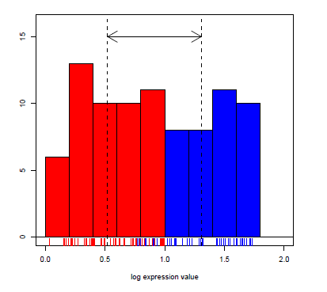
wtest <- wilcox.test(rate~state, data = Puromycin, conf.int = TRUE)
wtest
Wilcoxon rank sum exact test
data: rate by state
W = 88, p-value = 0.1896
alternative hypothesis: true location shift is not equal to 0
95 percent confidence interval:
-10 75
sample estimates:
difference in location
36 wtest$p.value[1] 0.1895867The test statistic W in R is defined to be the sum of the ranks of one of the groups minus \(n_1(n_1 +1)/2\). The procedure to obtain a confidence interval is quite involved, but thankfully R will provide it to us upon request.
ANOVA
A two-sample t-test is used to test hypotheses about the means of two normal populations using two datasets which were sampled independently of one another from the two respective populations. An analysis of variance (ANOVA) allows for comparing the means of one variable among more than two populations (each of which is normally distributed), again under the assumption that the samples are independent.
- If the variance between groups is higher than the variance within groups, then there is evidence for a difference in means between groups.
- The null hypothesis is that the means of all groups are equal; the alternative is that at least one group has a different mean from the others.
- ANOVA does not provide which group is different nor in what direction; visualization and/or post-hoc pairwise t-tests can provide this information.
Here is a small illustration of the analysis of variance:

In the left image there is more variability within each of the three groups (boxplots) than between the three group means (\(\bar{x}_1\), \(\bar{x}_2\), \(\bar{x}_3\)). In the right image there is more variability between the three group means than within each of the three groups..
As with the previous testing procedures we’ve seen, we compare the p-value to the pre-selected significance level. If \(p \leq \alpha\) we reject the null and conclude we have evidence that at least one population (or group) mean is different from the others, while if \(p > \alpha\), we fail to reject the null and conclude we do not have evidence that any of the means are different.
R will calculate all of the statistics for us! For example, let’s test at the 5% significance level the alternative hypothesis that at least one of the mean BMIs for three different educational levels are different from the other two (versus the null of three equal means).
library(readr)
R_data <- read_csv("~/R_data2.csv")baby_aov1 <- aov(BMI ~ educational_level, data = R_data)
summary(baby_aov1) Df Sum Sq Mean Sq F value Pr(>F)
educational_level 2 63.8 31.90 3.409 0.0351 *
Residuals 187 1749.8 9.36
---
Signif. codes: 0 '***' 0.001 '**' 0.01 '*' 0.05 '.' 0.1 ' ' 1Here the F-statistic is large enough to get a p-value smaller than 0.05 so we conclude at least one population mean BMI is different from the other two. But which group is it? Let’s look at a boxplot:
boxplot(R_data$BMI ~ R_data$educational_level)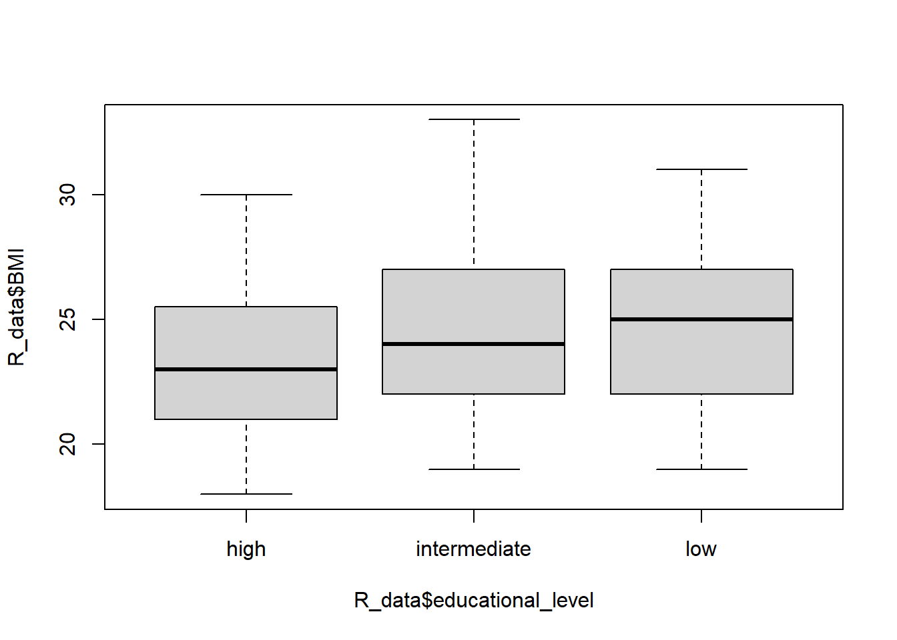
This visual information is informative but we can actually make pairwise comparisons of all the means using Tukey’s HSD (for example). We initially used a significance level of 0.05, but will now conduct several tests and use a multiple test procedure that adjusts the family-wise error rate to 5%:
TukeyHSD(baby_aov1) Tukey multiple comparisons of means
95% family-wise confidence level
Fit: aov(formula = BMI ~ educational_level, data = R_data)
$educational_level
diff lwr upr p adj
intermediate-high 1.1397600 -0.07099027 2.350510 0.0697761
low-high 1.3587302 -0.05180238 2.769263 0.0617385
low-intermediate 0.2189702 -1.12174472 1.559685 0.9212512Note that we use the multiple testing procedure to account for the fact that we are simultaneously performing more than one test or CI which compounds the error rates of each test. Since all of the CIs contain 0 and none of the p-values are significant at the 5% level, the initial test result is overturned! We do not actually have evidence that education level affects average BMI.
Also note you would not bother with these posthoc tests/CIs if your initial ANOVA results were not statistically significant.
Kruskal-Wallis Test
The single-factor ANOVA model for comparing population or treatment means assumed that for all groups, random samples were drawn from normal populations each having the same variance. This normality assumption is required for a valid F test, but the next procedure for testing the equality of the centers of the distributions only requires that the populations have the same continuous distribution.
The null hypothesis is that all of the group centers are the same and the alternative is that at least one of the group centers is different. The Kruskal-Wallis test examines the validity of these hypotheses by working on ranks of the data without assuming the data come from a specific distribution.
The procedure starts by ranking all the data together on the assumption of the null, that if the centers of the groups are equal, the ranks from all the groups will be intermingled. If the null is false, then some samples will consist mostly of observations having small ranks in the combined sample, whereas others will consist mostly of observations having large ranks.
The Kruskal-Wallis test statistic is a measure of the extent to which the sums of the ranks within each group deviate from their common expected value, and the null is rejected if the computed value of the statistic indicates too great a discrepancy between observed and expected rank averages.
Example. The accompanying observations on axial stiffness index resulted from a study of metal-plate connected trusses in which five different plate lengths (4 in., 6 in., 8 in., 10 in., and 12 in.) were used.

Here we read in the data:
library(readr)
stiffness <- read_csv("~/stiffness.csv")If we look at the boxplot of the stiffness values for each length, we see that the means are probably different and that the boxplots don’t look very normal:
boxplot(stiffness~lengths, data = stiffness)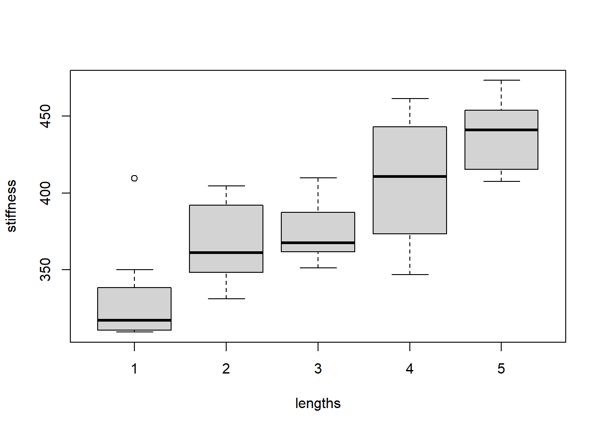
The output of the Kruskal-Wallis test confirms that the means are indeed different. The p-value is quite small, indicating at least two of the group centers are different:
kruskal.test(stiffness~lengths, data = stiffness)
Kruskal-Wallis rank sum test
data: stiffness by lengths
Kruskal-Wallis chi-squared = 20.122, df = 4, p-value = 0.0004724Chi-squared test
A \(\chi^2\) (read: chi-squared) test of independence tests the null hypothesis that rows and columns are independent in a c x r contingency table (r is number of rows, c columns); the alternative is that they are not independent. The counts must be independent and sampled randomly. We can calculate a chi-squared statistic as follows:
\(\chi^2 = \sum \frac{(O_i-E_i)^2}{E_i}\)
where \(O_i\) is the observed count for cell i in the table, and \(E_i\) is the expected count, calculated by multiplying the row and column totals for i divided by the overall total. The p-value for the calculated \(\chi^2\) statistic depends on the \(\chi^2\) distribution with \((r -1)*(c-1)\) degrees of freedom. R will provide us with the statistic and p-value.
Suppose we have the following table:
| event | no event | total | |
|---|---|---|---|
| treatment | 20 | 80 | 100 |
| placebo | 50 | 50 | 100 |
| total | 70 | 130 | 200 |
and we want to know whether our treatment prevents events, that is, does the occurence of an event depend on the type of treatment?
mytable <- matrix(c(20, 50, 80, 50), nrow=2)
mytable [,1] [,2]
[1,] 20 80
[2,] 50 50cstest <- chisq.test(mytable)
cstest
Pearson's Chi-squared test with Yates' continuity correction
data: mytable
X-squared = 18.484, df = 1, p-value = 1.714e-05cstest$p.value[1] 1.713801e-05Correlations
If we want to know the degree of a linear association between 2 variables, we can calculate correlation. Correlation does not make any a priori assumptions about whether one variable is dependent on the other and is not concerned with the relationship between the variables. We have 4 general types of association to consider:
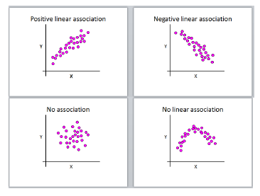
Pearson’s r can only lie in the interval [-1,1] (inclusive), where
- r = 0, no linear correlation
- r > 0, positive linear correlation
- r < 0, negative linear correlation
- r = 1, perfect positive linear correlation
- r = -1, perfect negative linear correlation
Note that correlation does not imply causation. If two variables are highly correlated you cannot infer that one is causing the other; they could both be varying along with a third, possibly unknown confounding factor (either causal or not).
For Pearson’s r we assume a linear relationship between x and y and that they both follow a normal distribution.
If data are not normally distributed, the degree of association can be determined by the ranked correlation coefficient, Spearman’s \(\rho\), which replaces the x’s and y’s in the Pearson formula with their ranks.
R provides p-values and confidence intervals for both Pearson and Spearman correlations.
Let’s look at an example of how BMI and cholesterol are associated:
plot(R_data$BMI, R_data$cholesterol)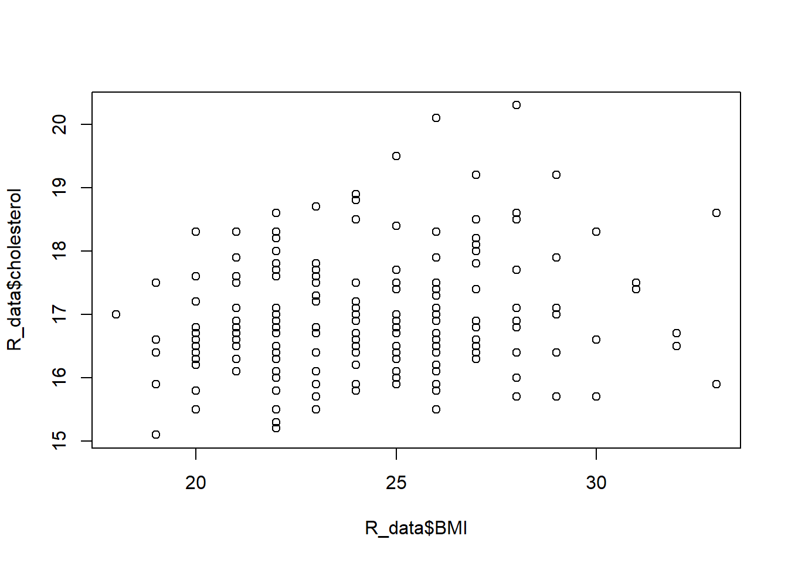
cor(R_data$BMI, R_data$cholesterol)[1] 0.2004703cor(R_data$BMI, R_data$cholesterol, method="spearman")[1] 0.1876358cor.test(R_data$BMI, R_data$cholesterol)
Pearson's product-moment correlation
data: R_data$BMI and R_data$cholesterol
t = 2.8057, df = 188, p-value = 0.00555
alternative hypothesis: true correlation is not equal to 0
95 percent confidence interval:
0.05982424 0.33331173
sample estimates:
cor
0.2004703 cor.test(R_data$BMI, R_data$cholesterol, method="spearman")Warning in cor.test.default(R_data$BMI, R_data$cholesterol, method =
"spearman"): Cannot compute exact p-value with ties
Spearman's rank correlation rho
data: R_data$BMI and R_data$cholesterol
S = 928642, p-value = 0.009531
alternative hypothesis: true rho is not equal to 0
sample estimates:
rho
0.1876358 Note the warning message (which is not an error!) that indicates if your data have tied values (e.g. 1, 1, 3, 5) then the p-value is approximated and is not exact. It’s nothing to worry about (especially if you’re not a statistician…).
Regression
Linear regression
There is a high positive correlation between birth weight and gestational age, but this says nothing about predictive power of the variables. We would like to explain how gestational age influences changes in birth weight.
plot(R_data$pregnancy_length_weeks, R_data$birthweight)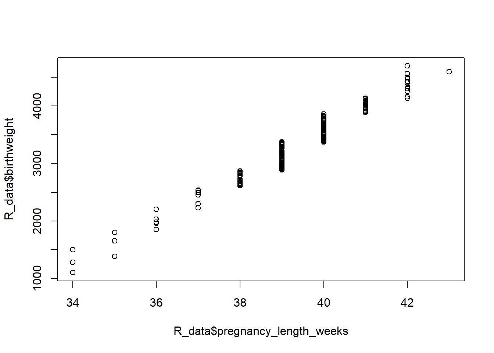
cor(R_data$pregnancy_length_weeks, R_data$birthweight)[1] 0.9785784We’ll quantify this relationship using linear regression, distinguishing between an in- dependent, or predictor or explanatory, variable (gestational age) and a dependent, or response or outcome, variable (birth weight). Simple linear regression uses the following model:
\(Y_i = \beta_0 + \beta_1*X_i + \varepsilon_i\)
where \(1 \leq i \leq n\), the model is a straight line, and error is remaining variation which cannot be explained by the model. The parameters \(beta_0\) and \(\beta_1\) are the intercept and slope of a straight line, respectively.
The \(\beta_0\) and \(\beta_1\) of the one straight line that best fits the data is estimated via the method of least squares. The “best” line is the one that has the lowest sum of squared residuals. The command to get these estimates in R is lm:
lm1 <- lm(birthweight ~ pregnancy_length_weeks, data = R_data)
lm1
Call:
lm(formula = birthweight ~ pregnancy_length_weeks, data = R_data)
Coefficients:
(Intercept) pregnancy_length_weeks
-12441.4 400.3 You can predict for given values
predict(lm1)[R_data$pregnancy_length_weeks==35] 12 73 141
1568.921 1568.921 1568.921 You can also use predict() to predict y for x’s that are not already in your data:
predict(lm1, newdata=data.frame(pregnancy_length_weeks=c(seq(25,50,5)))) 1 2 3 4 5 6
-2434.0284 -432.5538 1568.9207 3570.3952 5571.8698 7573.3443 but watch out for extrapolating (predicting outside the range of your data) - clearly we can’t have negative birth weights!
Now, before we make inference on or, actually, even find and use this line, we must check that the following assumptions hold, otherwise we will not obtain trustworthy results: - relationship between x and y can be described by a straight line - outcomes y are independent - variance of residuals is constant across values of x - residuals follow a normal distribution
To get diagnostic plots in R, we can check a histogram of the data and additionally plot our model to check that the residuals are normal and homoscedastic (have constant variance) across the weeks:
hist(R_data$birthweight)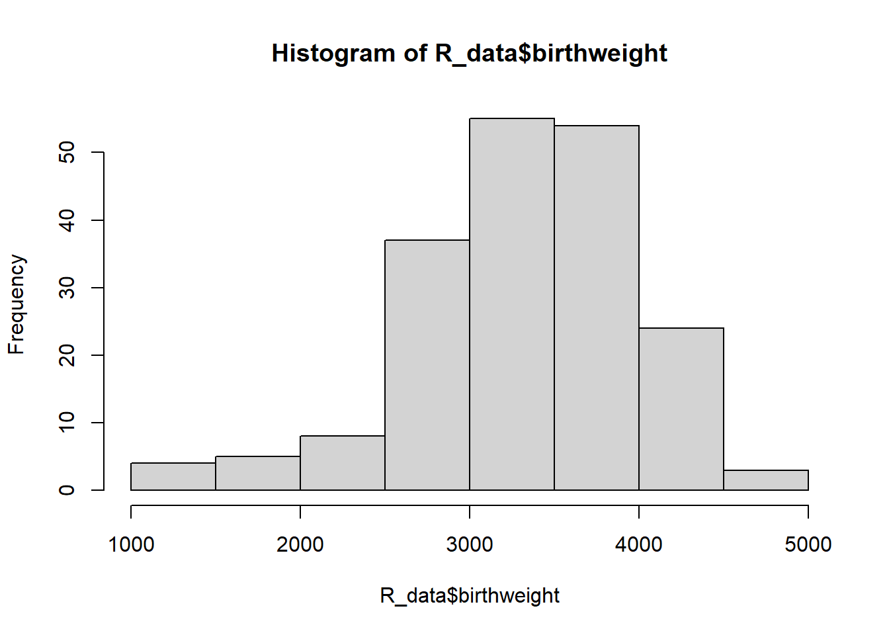
par(mfrow=c(2,2))
plot(lm1)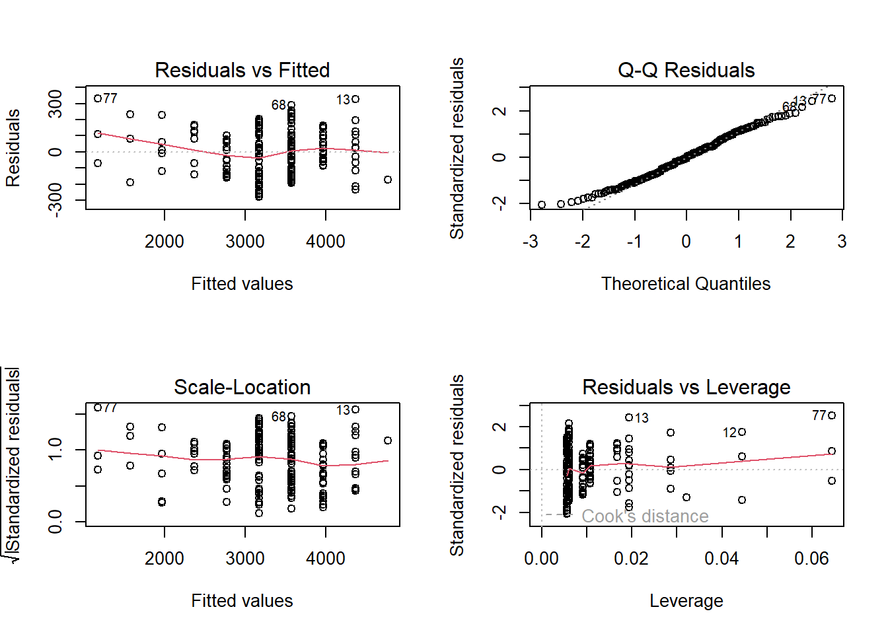
The top left plot tells us if our residuals are homoscedastic, and the top right plot displays a quantile-quantile (QQ) plot to check for normality. Here are examples of bad QQ plots and heteroscedasticity:
set.seed(1234)
par(mfrow=c(2,2))
x <- sort(rnorm(100))
y1 <- sort(rt(100,2))
plot(x, y1, xlim=c(-3,3), xlab="normal", ylab="t, df=2")
abline(0, 1)
y2 <- sort(rexp(100))
plot(x, y2, xlim=c(-3,3), ylim=c(-6,6), xlab="normal", ylab="exponential")
abline(0, 1)
plot(x, x^2-5+rexp(100))
abline(0, 0, col="red")
plot(x, x*rexp(100))
abline(0, 0, col="red")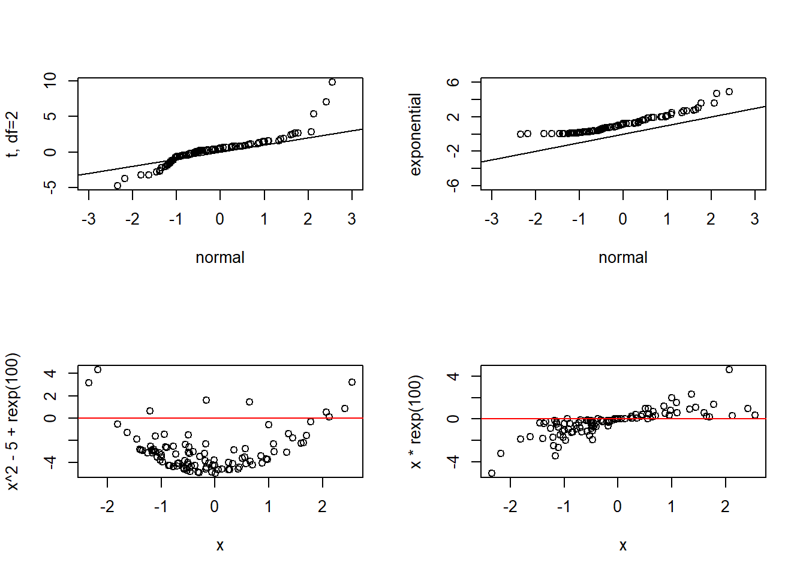
However, the assumptions reasonably hold for our baby data, so we’ll go ahead and use the model fit to make inference on the slope.
Actually, R has already done the inference…we just need to extract it from the model:
summary(lm1)
Call:
lm(formula = birthweight ~ pregnancy_length_weeks, data = R_data)
Residuals:
Min 1Q Median 3Q Max
-280.1 -106.7 -2.9 101.2 331.4
Coefficients:
Estimate Std. Error t value Pr(>|t|)
(Intercept) -12441.401 242.033 -51.40 <2e-16 ***
pregnancy_length_weeks 400.295 6.142 65.17 <2e-16 ***
---
Signif. codes: 0 '***' 0.001 '**' 0.01 '*' 0.05 '.' 0.1 ' ' 1
Residual standard error: 135.7 on 188 degrees of freedom
Multiple R-squared: 0.9576, Adjusted R-squared: 0.9574
F-statistic: 4248 on 1 and 188 DF, p-value: < 2.2e-16R has performed a one-sample t-test on the intercept b1 and slope b0 to determine if they are each statistically significantly different from 0. The probabilities are quite small, so we can reject the null hypothesis that they are equal to 0 and conclude that birthweight significantly increases, on average, by 400 grams per every additional week of gestation. The intercept is (usually) unimportant and we don’t really care that it is different from 0. If the p-value for the slope is not small (e.g. greater than 0.05) then we would say “we do not have enough evidence to reject the null hypothesis that the slope is 0.”
Now, how good does the model actually fit our data? How well does x predict y? The square of Pearson’s correlation coefficient, r, is a measure of goodness of fit. It is the proportion of variance in y that can be explained by the model (so, x). In our example, r2 is:
cor(R_data$pregnancy_length_weeks, R_data$birthweight)^2[1] 0.9576157summary(lm1)$r.squared[1] 0.9576157which means that 96% of the variability in birth weight can be explained by gestational age.
Simple linear regression models one y on one x. If we have multiple predictor variables, we use multiple linear regression to determine if the variability in y can be explained by this set of variables. In addition to the assumptions required for a valid simple linear regression, we now include that the covariates have no perfect multicollinearity, that is there is no strong correlation between the multiple x’s. The model is
\(Y_i = \beta_0 + \beta_1*X_{1i} + ... + \beta_k*X_{ki}+\varepsilon_i\)
In R, the addition of an extra variable is quite straightforward:
cor(R_data$pregnancy_length_weeks, R_data$BMI)[1] 0.01068054lm2 <- lm(birthweight ~ pregnancy_length_weeks + BMI, data = R_data)
lm2stats <- summary(lm2)
lm2stats
Call:
lm(formula = birthweight ~ pregnancy_length_weeks + BMI, data = R_data)
Residuals:
Min 1Q Median 3Q Max
-279.39 -105.78 -1.85 105.25 333.50
Coefficients:
Estimate Std. Error t value Pr(>|t|)
(Intercept) -12377.339 253.444 -48.837 <2e-16 ***
pregnancy_length_weeks 400.351 6.147 65.133 <2e-16 ***
BMI -2.738 3.190 -0.858 0.392
---
Signif. codes: 0 '***' 0.001 '**' 0.01 '*' 0.05 '.' 0.1 ' ' 1
Residual standard error: 135.8 on 187 degrees of freedom
Multiple R-squared: 0.9578, Adjusted R-squared: 0.9573
F-statistic: 2121 on 2 and 187 DF, p-value: < 2.2e-16Since the 2 variables are uncorrelated, we can add BMI to the model. We see that it does not significantly predict birth weight, but gestational age still does. We use the adjusted \(r^2\) to check goodness of fit:
lm2stats$adj.r.squared[1] 0.9573304So adding BMI does not help explain any of the variability in birth weight (since r2 was previously already 0.96). This is also confirmed by visualization:
plot(R_data$BMI, R_data$birthweight)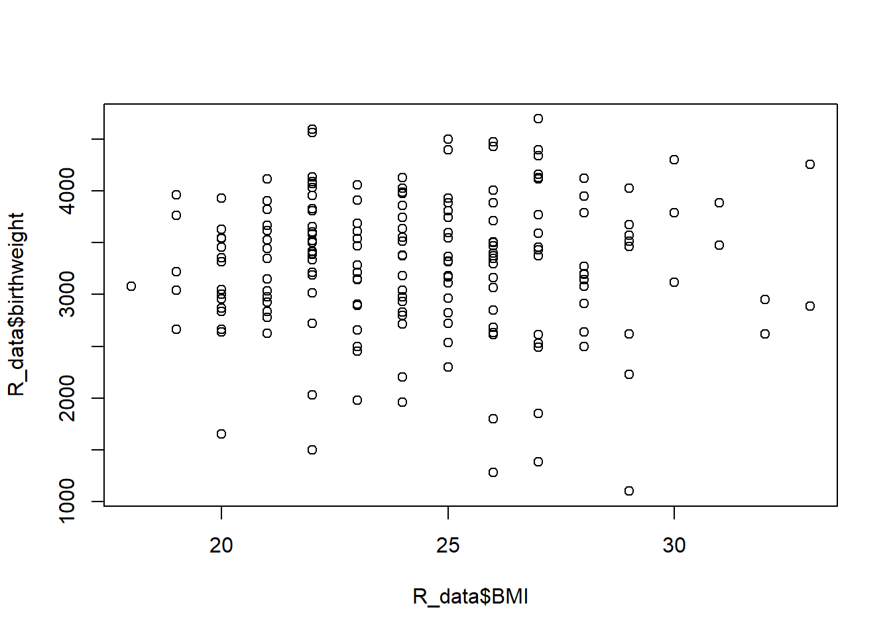
Note that the summary function returns a lot of information. If, for example, you wanted to extract only the p-values you could do the following:
names(lm2stats) [1] "call" "terms" "residuals" "coefficients"
[5] "aliased" "sigma" "df" "r.squared"
[9] "adj.r.squared" "fstatistic" "cov.unscaled" lm2stats$coef[,4] (Intercept) pregnancy_length_weeks BMI
2.179929e-108 1.815592e-130 3.918778e-01 We can predict birthweights with new data:
predict(lm2, newdata=data.frame(pregnancy_length_weeks=32,
BMI=30)) 1
351.771 But we cannot forget to check assumptions!
par(mfrow=c(2,2))
plot(lm2)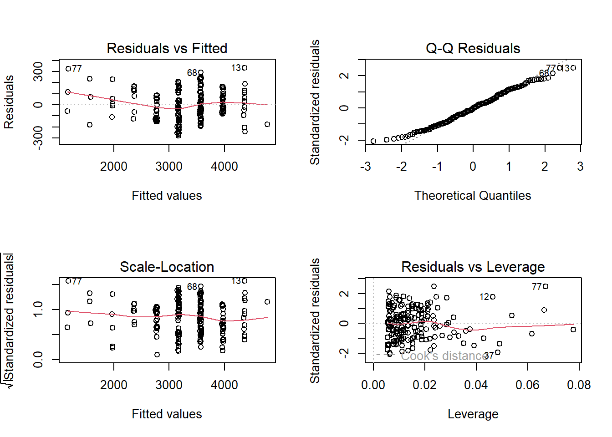
par(mfrow=c(1,1))
hist(lm2$residuals)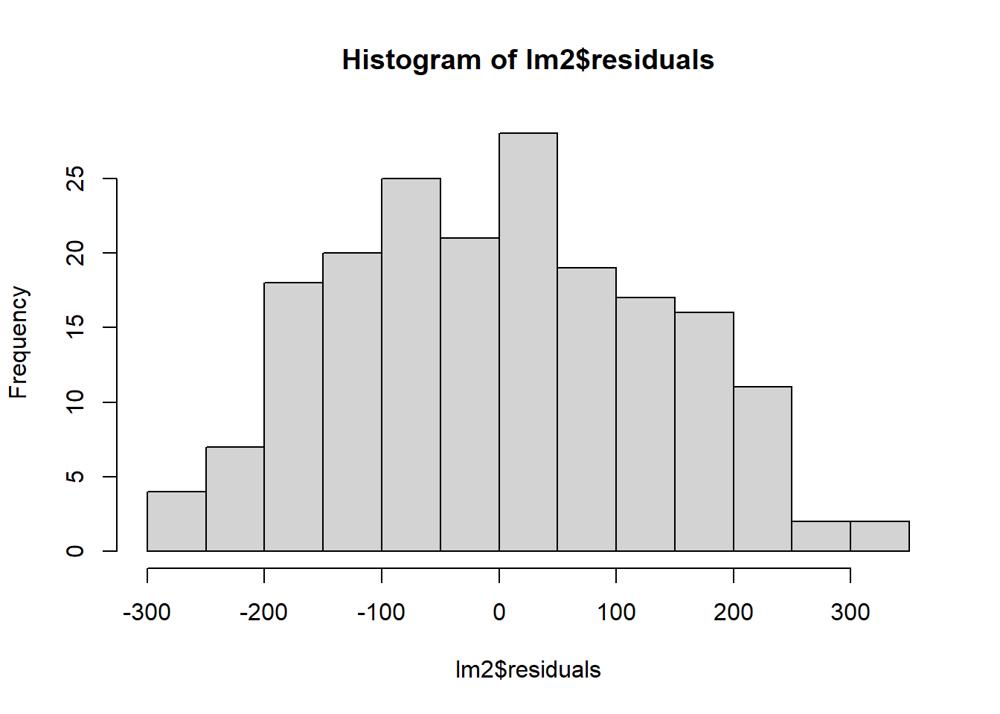
Logistic regression
There are many research topics for with the dependent variable y is binary (0/1), e.g.
- mortality (dead/alive)
- treatment response (responder/non-responder)
- development of disease (yes/no)
and we want to predict the membership of an individual to one of the two categories based on a set of predictors.
In this situation we have to work with probabilities, which are numbers between 0 and 1. A value \(P(y)\) that is close to 0 means that y is very unlikely to occur, while a value close to 1 means that y is very likely to occur.
In simple/multiple linear regression a continuous variable y is predicted by continuous/categorical x(s), but if y can only have 2 values (e.g. y = 0 or y = 1), how do we predict the probability that y = 1 given one or more predictors? Could we apply a linear regression model…?
we would try to fit \(P(y = 1) = \beta_0 + \beta_1X\), which doesn’t work. In linear regression we assume the relationship between x and y is linear, but in the case of binary outcomes this assumption is no longer valid. Results obtained from a linear regression model wouldn’t makes sense! Probabilities beyond the interval (0,1) are not interpretable.
Instead we’re going to use a logistic curve:
\(ln(\frac{p}{1-p}) = \beta_0 + \beta_1X\)
The function \(ln(p/(1- p))\) is called a logit of p and it is this function of y that is linear in x instead of y itself.
This model formulation assures that the predicted probability of an event falls between 0 and 1, unlike a linear regression model.
Also note that we’ve made no assumptions about linearity, normality or homoscedasticity! The values of the intercept and slope are estimated using the maximum likelihood method, which finds the values of the coefficients that make the observed data most likely to occur. Statistical significance of estimate coefficients is testing with the Wald test, which is based on the \(\chi^2\) distribution (though R calls it “z”). The goodness of fit is assessed by deviance, which is based on the differences observed-expected principle. Also, the Akaike information criterion (AIC) gives a measure of the quality of the model. The coefficients are most usefully interpreted with the following:
\(e^{\beta} \ \frac{\textrm{odds after a unit change}}{\textrm{original odds}}\)
and when x is binary, \(e^{\beta}\) is the odds ratio from the 2 by 2 contingency table!
In R:
R_data$StatusNew <- factor(R_data$Status,
levels = c("normal brain development", "intellectual disability"))
levels(R_data$StatusNew)[1] "normal brain development" "intellectual disability" lr1 <- glm(StatusNew ~ BMI, family = binomial(logit), data = R_data)
summary(lr1)
Call:
glm(formula = StatusNew ~ BMI, family = binomial(logit), data = R_data)
Coefficients:
Estimate Std. Error z value Pr(>|z|)
(Intercept) -2.40591 1.18095 -2.037 0.0416 *
BMI 0.08782 0.04822 1.821 0.0685 .
---
Signif. codes: 0 '***' 0.001 '**' 0.01 '*' 0.05 '.' 0.1 ' ' 1
(Dispersion parameter for binomial family taken to be 1)
Null deviance: 259.83 on 189 degrees of freedom
Residual deviance: 256.44 on 188 degrees of freedom
AIC: 260.44
Number of Fisher Scoring iterations: 4so \(logit(p) = -2.40591+0.08782* BMI\). Thus the probability of having a baby with an intellectual disability when BMI is 32, is:
logit_p1 <- -2.40591+0.08782*32
logit_p1[1] 0.40433Or
predict(lr1, newdata = data.frame(BMI = 32), se.fit = TRUE)$fit
1
0.4043502
$se.fit
[1] 0.3995839
$residual.scale
[1] 1To obtain the probability of the event use type = "response"
predict(lr1, newdata = data.frame(BMI = 32), se.fit = TRUE, type = "response")$fit
1
0.5997324
$se.fit
1
0.0959215
$residual.scale
[1] 1The coefficient b1 = 0.08782 can be exponentiated to obtain the odds ratio:
summary(lr1)$coef Estimate Std. Error z value Pr(>|z|)
(Intercept) -2.40591055 1.18095490 -2.037259 0.04162413
BMI 0.08782065 0.04821621 1.821393 0.06854720b1 <- summary(lr1)$coef[2, 1]
b1[1] 0.08782065exp(b1)[1] 1.091792Like multiple linear regression, we can add variables into the model here as well:
lr2 <- glm(StatusNew ~ BMI + smoking, family = binomial(logit), data = R_data)
summary(lr2)$coef Estimate Std. Error z value Pr(>|z|)
(Intercept) -2.52420359 1.22600372 -2.058887 0.039505027
BMI 0.08128428 0.04997051 1.626645 0.103812552
smokingyes 1.34305855 0.38824022 3.459349 0.000541482Thus the probability of having a baby with an intellectual disability when BMI is 32, and the mother is a smoker is:
mynewdata <- data.frame(BMI = 32, smoking = factor("yes"))
logit_p2 <- predict(lr2, newdata = mynewdata, type = "response")
logit_p2 1
0.8053309